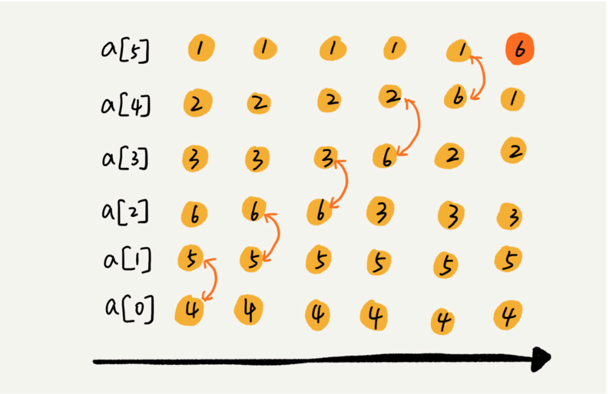
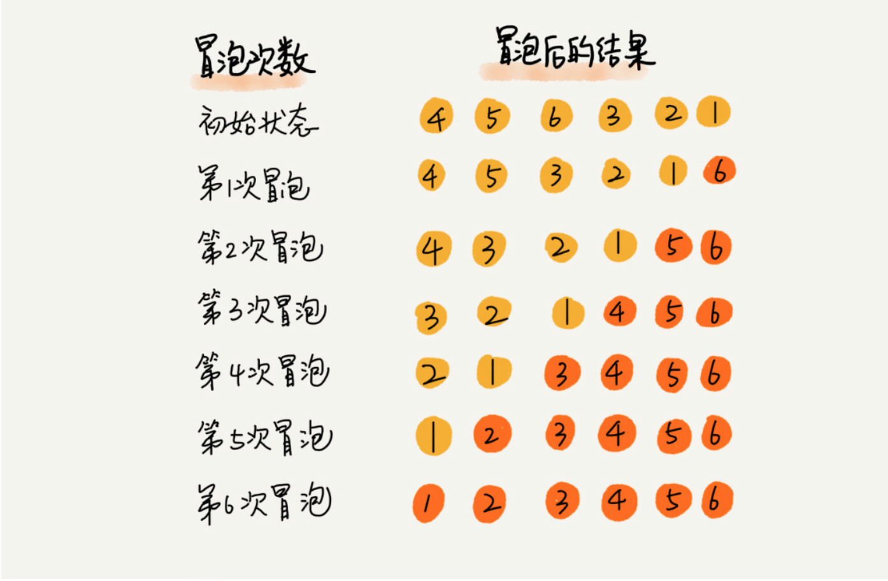
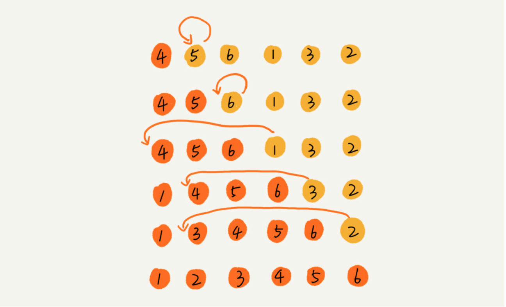
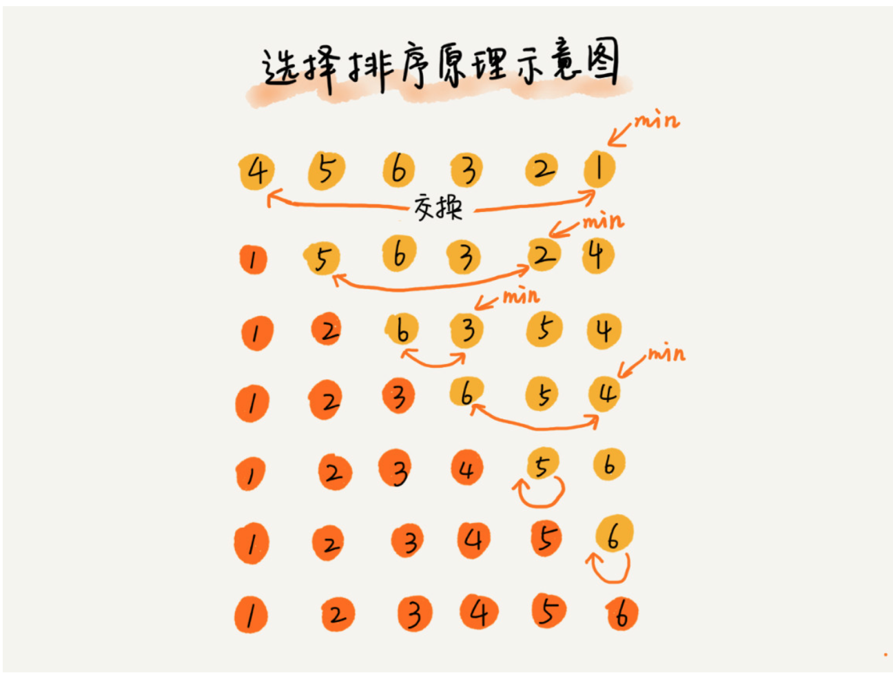
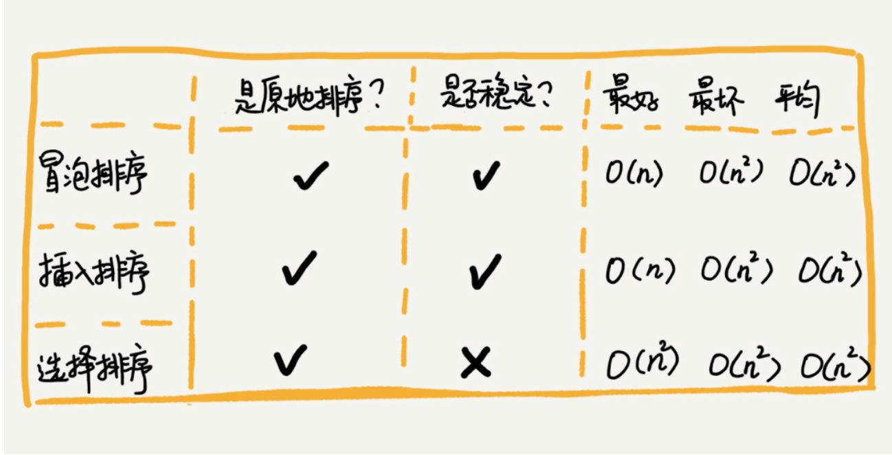
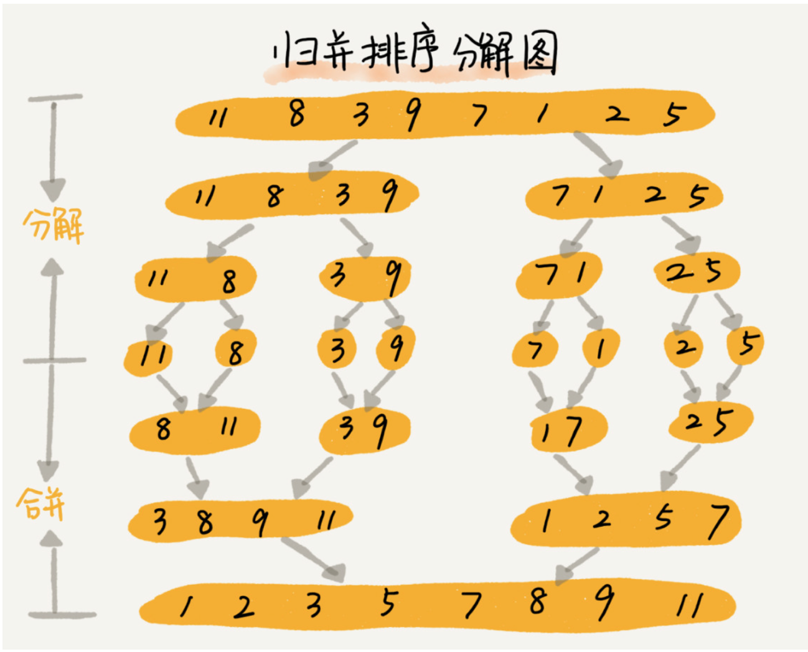
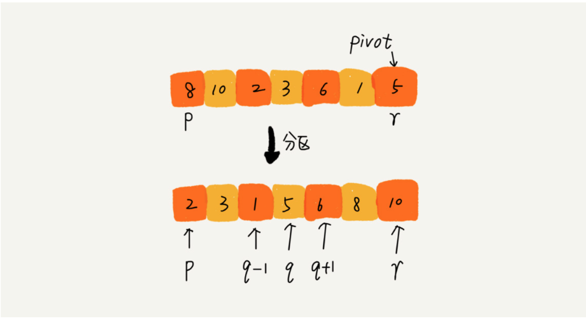
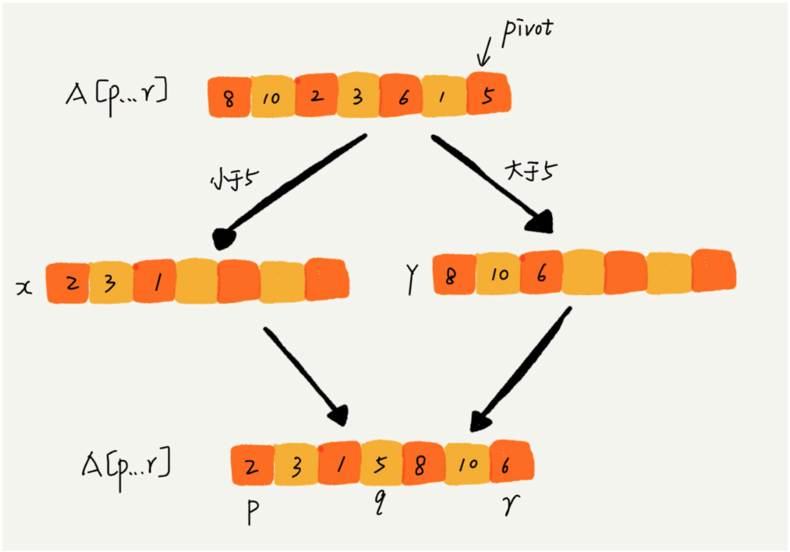
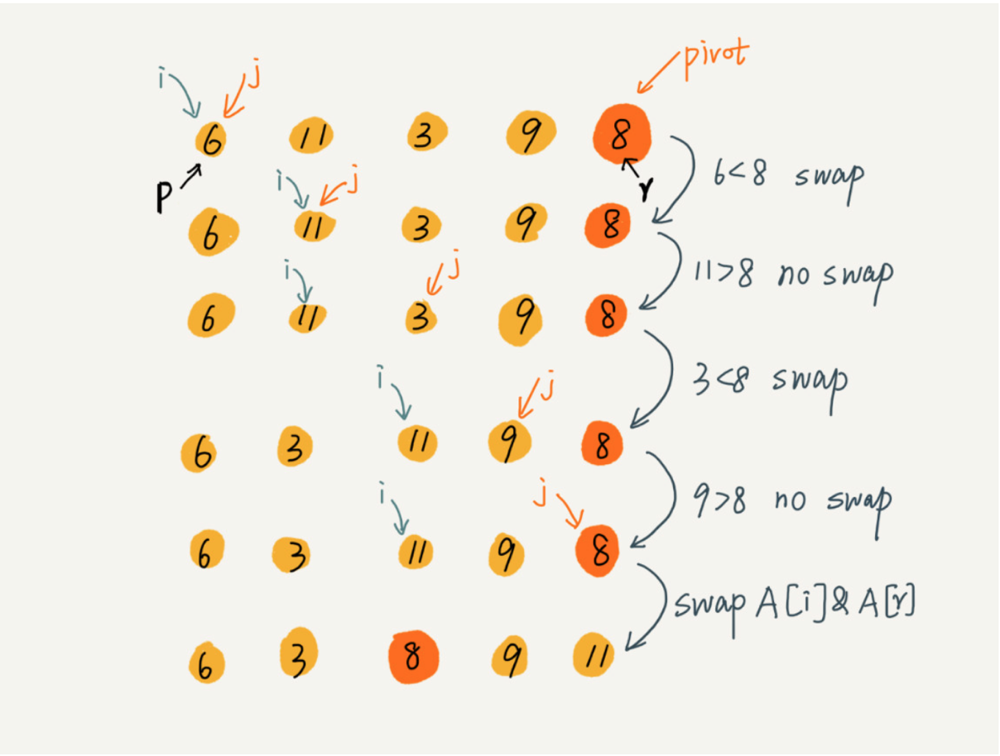
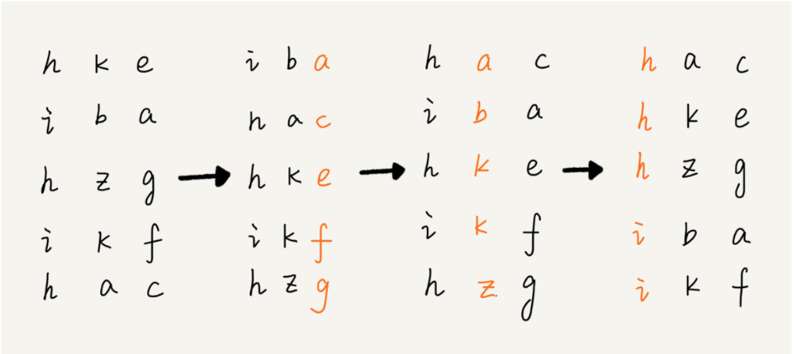

如何分析一个“排序算法”？
- 算法的执行效率
- 最好、最坏、平均情况时间复杂度。
- 时间复杂度的系数、常数和低阶。
- 比较次数，交换（或移动）次数。
- 排序算法的稳定性
- 稳定性概念：如果待排序的序列中存在值相等的元素，经过排序之后，相等元素之间原有的先后顺序不变。
- 稳定性重要性：可针对对象的多种属性进行有优先级的排序。
- 举例：给电商交易系统中的“订单”排序，按照金额大小对订单数据排序，对于相同金额的订单以下单时间早晚排序。用稳定排序算法可简洁地解决。先按照下单时间给订单排序，排序完成后用稳定排序算法按照订单金额重新排序。
- 排序算法的内存损耗
- 原地排序算法：特指空间复杂度是O(1)的排序算法。
有序度与逆序度
- 有序元素对：a[i] <= a[j], 如果 i < j.
- 逆序元素对：a[i] >= a[j], 如果 i > j.
- 逆序对 = 满有序度 - 有序度
冒泡排序(Bubble Sort)
冒泡排序只会操作相邻的两个数据。每次冒泡操作都会对相邻的两个元素进行比较，看是否满足大小关系要求。如果不满足就让她俩互换。一次冒泡会让至少一个元素移动到它应该在的位置，重复n次，就完成了 n 个数据的排序工作。


实际上，当在某次冒泡过程中，已经没有元素相互交换，就说明数据已经有序了。
- 冒泡是原地排序算法
- 冒泡是稳定排序算法（当比较两个元素时，出现相等的情况就不交换彼此）
- 时间复杂度
- 最好的情况下(数据已经有序),只需要进行一次冒泡操作,复杂度为O(n)
- 最坏的情况下,元素是倒排的,此时需要进行n次冒泡操作,复杂度为O(n^2)
- 平均复杂度:
对于包含n个数据的数组进行冒泡排序，平均交换次数是多少呢？ 最坏情况下，初始状态的有序度是0,所以要进行n(n-1)/2次交换。最好的情况下，初始状态的有序度是n(n-1)/2，就不需要进行交换。我们可以取个中间值n(n-1)/4，来表示初始有序度既不是很高也不是很低的平均情况。换句话说，平均情况下，需要n(n-1)/4次交换操作。比较操作肯定要比交换操作多，而复杂度的上限是O(n^2),所以平均情况下的时间复杂度就是O(n^2).
- code
1
2
3
4
5
6
7
8
9def bubble_sort(lists):
for i in range(len(lists)):
flag = True
for j in range(len(lists)-i-1):
if lists[j] > lists[j+1]:
lists[j],lists[j+1] = lists[j+1], lists[j]
flag = False
if flag:
break
插入排序（InsertionSort）
插入排序是一种简单直观的排序算法。它的工作原理是通过构建有序序列，对于未排序数据，在已排序序列中从后向前扫描，找到相应位置并插入。插入排序在实现上，在从后向前扫描过程中，需要反复把已排序元素逐步向后挪位，为最新元素提供插入空间。
插入排序也包含两种操作，一种是元素比较，一种是元素移动。当我们需要移动元素a时，我们需要拿a与排序好的区间里的元素依次比较，在比较的过程中，把排序好的元素移位，方便为a 元素的最终位置腾出空间。

- 插入排序是原地排序
- 插入排序是稳定的排序算法
- 时间复杂度
如果要排序的数据是有序的，我们并不需要搬移任何数据。如果我们从尾到头在有序数据组里面查找插入位置，每次只需要比较一个数据就能确定插入的位置。所以这种情况下，最好的时间复杂度为O(n)。注意，这里是从尾到头遍历已经有序的数据。
如果数组是倒序的，每次插入都相当于在数组的第一个位置插入新的数据，所以需要移动大量的数据，最坏时间复杂度为O(n^2) - code
1
2
3
4
5
6
7
8
9
10
11
12
13
14
15
16
17
18
19
20
21def insert_sort(lists):
for i in range(1,len(lists)):
tmp = lists[i]
j = i - 1
while j>=0:
if lists[j] > tmp:
lists[j+1] = lists[j] #数据移动
else:
break
lists[j+1] = tmp
def insert_sort(nums):
for i in range(1,len(nums)):
tmp = nums[i]
for j in range(i-1,-1,-1):
if nums[j] > tmp:
nums[j+1] = nums[j]
else:
break
nums[j+1] = tmp
return nums
直接选择排序
同样分为已排序的区间和未排序的区间。但是选择排序每次会从未排序的区间中找到最小的元素，将其放到已排序区间的末尾。
基本思想：
- 第1趟，在待排序记录r1 ~ r[n]中选出最小的记录，将它与r1交换；
- 第2趟，在待排序记录r2 ~ r[n]中选出最小的记录，将它与r2交换；
以此类推，第i趟在待排序记录r[i] ~ r[n]中选出最小的记录，将它与r[i]交换，使有序序列不断增长直到全部排序完毕。

是原地排序
- 不是稳定排序
比如 [5,8,5,2,9] 这样一组数据，使用选择排序算法来排序的话，第一次找到最小元素2，与第一个5交换位置，那第一个 5 和中间的 5 顺序就变了，所以就不稳定了。 - 最好情况下时间复杂度为O(n),最坏为O(n^2),平均情况下为O(n^2)
- code
1
2
3
4
5
6
7def select_sort(lists):
for i in range(0,len(lists)):
cur_min = i
for j in range(i, len(lists)):
if lists[j] < lists[cur_min]:
cur_min = j
lists[i],lists[cur_min] = lists[cur_min],lists[i]
三种 O(n^2)时间复杂度的算法比较，适合小规模数据

归并排序
如果要排序一个数组，我们先把数组从中间分成两部分，然后对前后两部分分别进行排序，再将排序好的两部分结合在一起，这样整个数组就有序了。

归并排序使用了分治思想，分治是一种解决问题的处理思想，递归是一种手段，分治常常利用递归来实现
递推公式
1
2
3
4#递推公式：
merge_sort(p…r) = merge(merge_sort(p…q), merge_sort(q+1…r))
#终止条件：
p >= r 不用再继续分解归并排序不是就地排序算法
- 是稳定的排序算法
在 merge 函数中，如果A[q…p] 和 A[p+1..r] 中有值相等的元素，那我们先把 A[q..p] 中的元素放入 tmp 数组。这样就保证了值相等的元素，在合并前后的先后顺序不变。 - 时间复杂度分析
1
2
3
4
5
6
7
8
9
10T(1) = C； n=1 时，只需要常量级的执行时间，所以表示为 C。
T(n) = 2*T(n/2) + n； n>1
T(n) = 2*T(n/2) + n
= 2*(2*T(n/4) + n/2) + n = 4*T(n/4) + 2*n
= 4*(2*T(n/8) + n/4) + 2*n = 8*T(n/8) + 3*n
= 8*(2*T(n/16) + n/8) + 3*n = 16*T(n/16) + 4*n
......
= 2^k * T(n/2^k) + k * n
......
通过这样一步一步分解推导，我们可以得到T(n) = 2^kTn(n/2^k) + km。当T(n/2^k) = T(1)时，也就是 n/2^k = 1，我们得到k = log2n。于是 T(n) = Cn + nlog2n 。所以归并排序的时间复杂度为O(nlogn)。
- 空间复杂度分析
实际上，递归代码的空间复杂度并不能像时间复杂度那样累加。刚刚我们忘记了最重要的一点，那就是，尽管每次合并操作都需要申请额外的内存空间，但是合并完成之后，临时空间就被释放。在任意时刻，CPU 只会有一个函数在执行，也就只会有一个临时的内存空间在使用。临时内存空间最大也不会超过n个数据的大小，所以空间复杂度为O(n)。 code
1
2
3
4
5
6
7
8
9
10
11
12
13
14
15
16
17
18
19
20
21
22
23
24
25
26
27def merge(left,right):
i,j = 0,0
result = []
while i < len(left) and j < len(right):
if left[i] <= right[j]:
result.append(left[i])
i += 1
else:
result.append(right[j])3
j += 1
result += left[i:]
result += right[j:]
return result
def merge_sort(lists):
# 递归终止条件 -> 不可再分
if len(lists) <= 1:
return lists
num = len(lists)//2
left = merge_sort(lists[:num])
right = merge_sort(lists[num:])
return merge(left,right)1
2
3
4
5
6
7
8
9
10
11
12
13
14
15
16
17
18
19
20
21
22
23
24
25
26
27
28
29
30
31
32
33
34
35
36
37
38
39
40
41# merge sort linklist version
class Solution:
def merge(self,list1,list2):
dummy = ListNode(0)
cur = dummy
while list1 and list2:
if list1.val <= list2.val:
cur.next = list1
list1 = list1.next
else:
cur.next = list2
list2 = list2.next
cur = cur.next
if list1:
cur.next = list1
if list2:
cur.next = list2
return dummy.next
def sortList(self, head):
"""
:type head: ListNode
:rtype: ListNode
"""
if not head or not head.next:
return head
fast = head.next
slow = head
while fast and fast.next:
fast = fast.next.next
slow = slow.next
middle = slow.next
slow.next = None
return self.merge(self.sortList(head),self.sortList(middle))
快速排序(Quick Sort)
快速排序也是利用分治的思想，如果要排序数组中从下标q,r之间的数据，我们从q,r之间选择一个数据作为pivot，小于 pivot 的数据放左边，大于pivot的数据放右边，中间是pivot。


- 快速排序是就地排序算法
- 快速排序是不稳定算法
- 待排序数组:int a[] ={1, 2, 2, 3, 4, 5, 6},在快速排序的随机选择pivot阶段：
- 若选择a[2]（即数组中的第二个2）为pivot，而把大于等于比较子的数均放置在大数数组中，则a[1]（即数组中的第一个2）会到pivot的右边， 那么数组中的两个2非原序（这就是“不稳定”）。
- 若选择a[1]为pivot，而把小于等于比较子的数均放置在小数数组中，则数组中的两个2顺序也非原序
时间性能分析
地推公式
1
2T(1) = C； n=1 时，只需要常量级的执行时间，所以表示为 C。
T(n) = 2*T(n/2) + n； n>1大部分情况下的时间复杂度都可以做到 O(nlogn)，只有在极端情况下才退化为O(n^2)
递推公式(快速实现)
1
2
3
4
5递推公式：
quick_sort(lists) = quick_sort([item < pivot]) + pivot + quick_sort(item > pivot)
终止条件：
len(lists) <= 1code
1
2
3
4
5
6
7
8# 快速实现
from random import choice
def quick_sort(lists):
if len(lists) <= 1:
return lists
else:
pivot = choice(lists)
return quick_sort([item for item in lists if item < pivot]) + [pivot] + quick_sort([item for item in lists if item > pivot])就地排序版本
1
2
3
4
5
6
7
8
9
10
11
12
13
14
15
16
17
18
19
20
21
22
23
24
25
26
27
28
29
30递推公式：
quick_sort(p…r) = quick_sort(p…q-1) + quick_sort(q+1, r)
终止条件：
p >= r
// 快速排序，A 是数组，n 表示数组的大小
quick_sort(A, n) {
quick_sort_c(A, 0, n-1)
}
// 快速排序递归函数，p,r 为下标
quick_sort_c(A, p, r) {
if p >= r then return
q = partition(A, p, r) // 获取分区点
quick_sort_c(A, p, q-1)
quick_sort_c(A, q+1, r)
}
partition(A, p, r) {
pivot := A[r]
i := p
for j := p to r-1 do {
if A[j] < pivot {
swap A[i] with A[j]
i := i+1
}
}
swap A[i] with A[r]
return i这里的处理有点类似选择排序，我们通过游标 i 把 A[p..r-1]分成两部分. A[p…i-1]的元素都是小于 pivot的，我们暂且叫它“已处理区间”，A[i..r-1]是“未处理区间”。我们每次都从未处理的区间A[i…r-1]中取一个元素 A[j]，与 pivot 对比，如果小于 pivot，则将其加入到已处理区间的尾部，也就是 A[i]的位置。
先把 pivot 元素放到数组最后的位置，A[p…i-1]的元素都是小于 pivot的，所以 i 总是指向第一个大于 pivot的元素,所以在randomized_partition函数的最后，用数组最后一个元素与 i 位置元素的元素进行交换。

1
2
3
4
5
6
7
8
9
10
11
12
13
14
15
16
17
18
19
20
21
22
23
24
25
26
27
28
29
30
31from random import randint
## 就地排序实现
def randomized_partition(lists,left,right):
# 生成随机元素并与 lists 最右边元素进行交换
pivot = randint(left,right)
lists[pivot],lists[right] = lists[right],lists[pivot]
i = left
# 0..i保存着比 pivot 小的所有元素
for j in range(left,right):
if lists[j] < lists[right]:
lists[i],lists[j] = lists[j],lists[i]
i += 1
lists[right],lists[i] = lists[i],lists[right]
return i
def quick_sort_c(lists, left, right):
if left >= right:
return
pivot = randomized_partition(lists,left, right)
quick_sort_c(lists,left,pivot-1)
quick_sort_c(lists,pivot+1,right)
def quick_sort(lists):
if len(lists) <= 1:
return
quick_sort_c(lists,0,len(lists)-1)
三种时间复杂度是 O(n) 的排序算法：桶排序、计数排序、基数排序。因为这些排序算法的时间复杂度是线性的，所以我们把这类排序算法叫作线性排序（Linear sort）。之所以能做到线性的时间复杂度，主要原因是，这三个算法是非基于比较的排序算法，都不涉及元素之间的比较操作。
这几种排序算法理解起来都不难，时间、空间复杂度分析起来也很简单，但是对要排序的数据要求很苛刻，所以我们学习重点的是掌握这些排序算法的适用场景。
桶排序（Bucket sort）
按照惯例，我先给你出一道思考题：如何根据年龄给 100 万用户排序？ 你可能会说，我用上一节课讲的归并、快排就可以搞定啊！是的，它们也可以完成功能，但是时间复杂度最低也是 O(nlogn)。有没有更快的排序方法呢？让我们一起进入今天的内容！
首先，我们来看桶排序。桶排序，顾名思义，会用到“桶”，核心思想是将要排序的数据分到几个有序的桶里，每个桶里的数据再单独进行排序。桶内排完序之后，再把每个桶里的数据按照顺序依次取出，组成的序列就是有序的了。
桶排序的时间复杂度为什么是 O(n) 呢？
如果要排序的数据有 n 个，我们把它们均匀地划分到 m 个桶内，每个桶里就有 k=n/m 个元素。每个桶内部使用快速排序，时间复杂度为 O(k * logk)。m 个桶排序的时间复杂度就是 O(m k logk)，因为 k=n/m，所以整个桶排序的时间复杂度就是 O(n*log(n/m))。当桶的个数 m 接近数据个数 n 时，log(n/m) 就是一个非常小的常量，这个时候桶排序的时间复杂度接近 O(n)。
桶排序看起来很优秀，那它是不是可以替代我们之前讲的排序算法呢？
答案当然是否定的。为了让你轻松理解桶排序的核心思想，我刚才做了很多假设。实际上，桶排序对要排序数据的要求是非常苛刻的。
首先，要排序的数据需要很容易就能划分成 m 个桶，并且，桶与桶之间有着天然的大小顺序。这样每个桶内的数据都排序完之后，桶与桶之间的数据不需要再进行排序。
其次，数据在各个桶之间的分布是比较均匀的。如果数据经过桶的划分之后，有些桶里的数据非常多，有些非常少，很不平均，那桶内数据排序的时间复杂度就不是常量级了。在极端情况下，如果数据都被划分到一个桶里，那就退化为 O(nlogn) 的排序算法了。
桶排序比较适合用在外部排序中。所谓的外部排序就是数据存储在外部磁盘中，数据量比较大，内存有限，无法将数据全部加载到内存中。
比如说我们有10GB的订单数据，我们希望按订单金额（假设金额都是正整数）进行排序，但是我们的内存有限，只有几百 MB，没办法一次性把 10GB 的数据都加载到内存中。这个时候该怎么办呢？
我们可以先扫描一遍文件，看订单金额所处的数据范围。假设经过扫描之后我们得到，订单金额最小是 1 元，最大是 10 万元。我们将所有订单根据金额划分到 100 个桶里，第一个桶我们存储金额在 1 元到 1000 元之内的订单，第二桶存储金额在 1001 元到 2000 元之内的订单，以此类推。每一个桶对应一个文件，并且按照金额范围的大小顺序编号命名（00，01，02…99）。
理想的情况下，如果订单金额在 1 到 10 万之间均匀分布，那订单会被均匀划分到 100 个文件中，每个小文件中存储大约 100MB 的订单数据，我们就可以将这 100 个小文件依次放到内存中，用快排来排序。等所有文件都排好序之后，我们只需要按照文件编号，从小到大依次读取每个小文件中的订单数据，并将其写入到一个文件中，那这个文件中存储的就是按照金额从小到大排序的订单数据了。
不过，你可能也发现了，订单按照金额在 1 元到 10 万元之间并不一定是均匀分布的 ，所以 10GB 订单数据是无法均匀地被划分到 100 个文件中的。有可能某个金额区间的数据特别多，划分之后对应的文件就会很大，没法一次性读入内存。这又该怎么办呢？
针对这些划分之后还是比较大的文件，我们可以继续划分，比如，订单金额在 1 元到 1000 元之间的比较多，我们就将这个区间继续划分为 10 个小区间，1 元到 100 元，101 元到 200 元，201 元到 300 元…901 元到 1000 元。如果划分之后，101 元到 200 元之间的订单还是太多，无法一次性读入内存，那就继续再划分，直到所有的文件都能读入内存为止。
计数排序（Counting sort）
当要排序的数据n量很大，而数据规模k很小时，可以采用计数排序，按照数据规模k创建k个桶，这样只要扫描一遍数据，把相应的数据放入桶中就实现了排序
我们都经历过高考，高考查分数系统你还记得吗？我们查分数的时候，系统会显示我们的成绩以及所在省的排名。如果你所在的省有 50 万考生，如何通过成绩快速排序得出名次呢？
考生的满分是 900 分，最小是 0 分，这个数据的范围很小，所以我们可以分成 901 个桶，对应分数从 0 分到 900 分。根据考生的成绩，我们将这 50 万考生划分到这 901 个桶里。桶内的数据都是分数相同的考生，所以并不需要再进行排序。我们只需要依次扫描每个桶，将桶内的考生依次输出到一个数组中，就实现了 50 万考生的排序。因为只涉及扫描遍历操作，所以时间复杂度是 O(n)。
基数排序（Radix sort）
我们再来看这样一个排序问题。假设我们有 10 万个手机号码，希望将这 10 万个手机号码从小到大排序，你有什么比较快速的排序方法呢？
我们之前讲的快排，时间复杂度可以做到 O(nlogn)，还有更高效的排序算法吗？桶排序、计数排序能派上用场吗？手机号码有 11 位，范围太大，显然不适合用这两种排序算法。针对这个排序问题，有没有时间复杂度是 O(n) 的算法呢？现在我就来介绍一种新的排序算法，基数排序。
刚刚这个问题里有这样的规律：假设要比较两个手机号码 a，b 的大小，如果在前面几位中，a 手机号码已经比 b 手机号码大了，那后面的几位就不用看了。
借助稳定排序算法，这里有一个巧妙的实现思路。还记得我们第 11 节中，在阐述排序算法的稳定性的时候举的订单的例子吗？我们这里也可以借助相同的处理思路，先按照最后一位来排序手机号码，然后，再按照倒数第二位重新排序，以此类推，最后按照第一位重新排序。经过 11 次排序之后，手机号码就都有序了。
手机号码稍微有点长，画图比较不容易看清楚，我用字符串排序的例子，画了一张基数排序的过程分解图，你可以看下。

注意，这里按照每位来排序的排序算法要是稳定的，否则这个实现思路就是不正确的。因为如果是非稳定排序算法，那最后一次排序只会考虑最高位的大小顺序，完全不管其他位的大小关系，那么低位的排序就完全没有意义了。
根据每一位来排序，我们可以用刚讲过的桶排序或者计数排序，它们的时间复杂度可以做到 O(n)。如果要排序的数据有 k 位，那我们就需要 k 次桶排序或者计数排序，总的时间复杂度是 O(k*n)。当 k 不大的时候，比如手机号码排序的例子，k 最大就是 11，所以基数排序的时间复杂度就近似于 O(n)。
实际上，有时候要排序的数据并不都是等长的，比如我们排序牛津字典中的 20 万个英文单词，最短的只有 1 个字母，最长的我特意去查了下，有 45 个字母，中文翻译是尘肺病。对于这种不等长的数据，基数排序还适用吗？
实际上，我们可以把所有的单词补齐到相同长度，位数不够的可以在后面补“0”，因为根据ASCII 值，所有字母都大于“0”，所以补“0”不会影响到原有的大小顺序。这样就可以继续用基数排序了。
我来总结一下，基数排序对要排序的数据是有要求的，需要可以分割出独立的“位”来比较，而且位之间有递进的关系，如果 a 数据的高位比 b 数据大，那剩下的低位就不用比较了。除此之外，每一位的数据范围不能太大，要可以用线性排序算法来排序，否则，基数排序的时间复杂度就无法做到 O(n) 了。
reference 数据结构与算法之美 王争